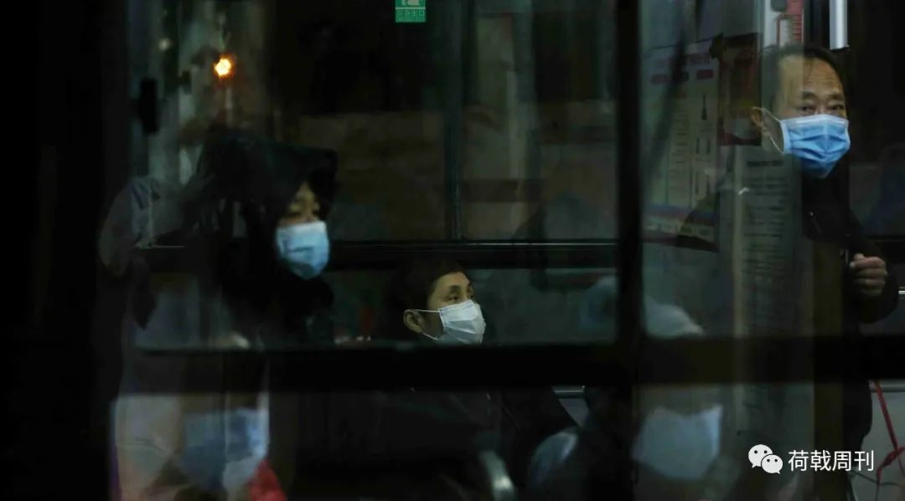
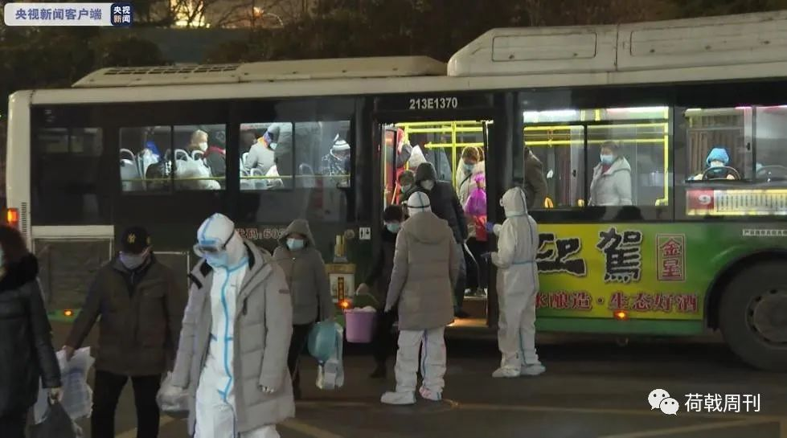

解除隔离回家，这些武汉人重新拥抱阳光灿烂的日子
原文链接 备份链接 出院——隔离——回家，越来越多人走在这样一条重回阳光下的道路上。最后的战役已经打响，所有人都还需要站好最后一班岗 ***********刘以秦 | 文*********** …
访谈对象：确诊患者/退休教师
采访/整理：画天
访谈时间：2月15日晚上
要活命，必须吃
我住在洪山区狮子山街道，先是在我们华中农业大学的医院拍了胸片，医生怀疑我肺部有问题，让我去外面的医院做CT。我问社区能不能接送，社区说他们的车子是用来买菜的，没有专门拉发热病人的车，让我打120，120也不行，就让我在家里观察，说也许明天就不发烧了。
我等了三天，一开始没有别的症状，就是发热，三天之后精神状态不好了，心理压力很大。2月1号，终于做了第一次核酸检测，等医院的结果没等到，隔离点说要有核酸检测，我这心里很焦虑。
第二天，又让我们去医院做核酸检测。当时医院里的人都蜂拥而上，无论有病没病，就那么一扇门，都扑着抢着要看那个名单。我当时就觉得，交叉传染肯定很多人。第二次测，就是阳性了。

武汉某医院发热门诊
我从医院出来的时候，隔壁病房一个五十出头的病人突然死掉了，还没做核酸检测，没确诊。他是男的，身体肯定比我好，结果一下子就没了。
我是从学校医院直接去的隔离点，医院不需要什么东西，我只带了随身的必需品。可是一进隔离点，工作人员就说我，怎么连被子都不带？他这一句话说得我心里真是拔凉拔凉的，没人跟我说过哪怕一句要带被子的话。他们让我家人送，我说送不来，孩子还在读书，我也没买车子。
我的孩子还小，只有二十出头。他没有父亲，心里也慌。有的时候我的事情也不会跟他说。我做了一辈子的教学工作，如果孩子他父亲在的话，我会没车子吗？买个车子也不是说挺贵，但是问题是买了都没人开。
没有被子，一个工作人员说，那好，你在房间里等着别出来。另一个送被子的小伙子又跟我说，你咋还在这儿等着，怎么不去拿？我就不知道到底听谁的，我去了你们害怕传染，我在房间里待着你们又说我不去。
打针之后，我的食欲不好，闻着饭就想吐，就跟别人说的怀孕一样。那个盒饭我吃不下，心里也过意不去，觉得有些浪费。后来我旁边的一个人，他帮我煨了一碗汤送过来，一天就喝了那一碗汤。我当时觉得这个汤好好喝，真的，虽然嘴里没胃口。后来还是努力吃饭，要活命，必须吃。
火车站之夜
去方舱的经历可以说是一波三折。第一次转运是在2月6号，五六点钟左右，没有吃晚饭。我去的时候，车上都没座儿了，有点犹豫。隔离点的人跟我说，赶快上，这次不去还不知道什么时候去，还管有没有座儿干什么。问这是去什么地方，社区的人说我们也不知道，反正跟着车子走就好了，隔离点的人也这样回答。
车子没开灯，黑压压的一片，大家戴着口罩和帽子，看不清楚彼此，也不愿意有交流，只有不停的咳嗽声。很多人跟搬家一样，被子和电饭锅，什么都带来了。我担心交叉传染，戴了三层口罩，只带了随身的换洗衣物，以及病例和片子。车子还要等一个人，结果等了一个小时还不开。
它是一个没有目的的行程，我们有一种被卖掉的感觉。车子绕来绕去，到最后，上了长江大桥，我想可能是要去汉口区的这个武展方舱医院，那个时候，我们已经在车上待了三个多小时了。

转运公交车上的患者
车子在武展门口停下。我本来是站在车门口的位置，下来得比较早，带头在门口排队。方舱的人问我们多大年龄，有没有基础病，我就说六十岁，但我有高血压，她说你们在旁边稍微等一下，又等了一个小时，我还以为可以进，结果方舱的人说有基础病的患者，还有年纪超过65岁，他们不接收，让我们原路返回。
那辆公交车送我们回去，载着我们到南站（武昌火车站）公共汽车停车场的时候，忽然就说不能送我们了，他要进站消毒，让我们跟自己的街道社区联系。车上都是老同志，有的还不是本地人，只是来帮忙带孙子。
我就跟我们社区的人联系，社区说好好好，马上找车子来接我。车子上面还有十几个人，就等嘛。陆续有别的社区派车过来，将各自的病人接走，只剩下我们，一共七八个人。
那天晚上特别冷，风有些刺骨的感觉。我们坐在车子上，手脚都冰凉冰凉的。我穿着保暖鞋，还是冻得疼。车上也不能开空调，结果整个武汉市绕了一圈，都没有一个落脚点，就把我们丢在那个火车站，真正就像是流落街头一样的感觉，心里凄凉。
当时车上有一个七十多岁的老太婆，别人车子到了要下去的时候，她也起身下去。结果司机正要关门，把她给夹住了。我们还以为她糊涂了，外面那么冷，怎么要下去。她也不作声，跟我们不好说，跟她的爹爹小声说要上厕所。她喝了很多水，这个病别人都说要多喝水，但是在车里坐了好几个小时，只进不出怎么受得了啊。你想七十多岁的老太婆怎么能憋住嘞，本来身体就不好，又发烧咳嗽。
那个爹爹就跟司机讲，能不能把门开一下，他婆婆要上厕所。司机说这不行，不能下车，除非是有车子来接。当时车上还有男的，我们就说让她到车后边，没办法，总不能说弄在身上吧，我们就说，诶，算了，都年纪大了，没关系。最后就在车里上了厕所。
等车子等了一两个小时。很多人拿了一大堆东西，结果住不进院，很狼狈。有人给家里打电话，但是家人也在隔离，出不来啊。整个家庭都是一个瘫痪的状态，儿子媳妇都在隔离，有的老人说要回家去，我说你回去就是害了家人。
武昌区给我打电话，我说不是武昌区的，他说那没办法，别的区不归他们管。洪山区防疫站也给我打电话，说是有车子过来，还是没解决问题，给我们隔离点打电话，说正在派车，说一句不好听的话，两个小时，蜗牛爬也爬过来了。真是上天无路，入地无门。我是一个人，我的孩子也被隔离了，怎么可能来接我。
后来还是一些好心人到处打电话帮我们联系。当时志愿者联系我们，一个电话接一个电话，问我们是不是已经被接走了，我说没有啊，什么时候走了，他说好像有人接，我说没有人接。旁白的人就提醒我说电话快没电了。最后不知道是谁把事情搞通了，来了一辆110，才把我们接回去。最后到酒店的时候是凌晨两点多钟。
橙子
7号那天，早上七点多钟，社区的人跟我说，把随身的东西整理一下，等通知，会有车子送我们去医院。我从早上等到晚上，在酒店里等了一天。
到了8号，问了半天，还是说等通知。下午两三点钟，让我清点行李。到了五点钟左右，让我们快下来，说是车子快来了。我问居委会的人，是在医院吃饭，还是先吃饭再去医院，他们也没回应。
我下楼的时候，看到有的社区的患者在吃饭，我问他们要一个盒饭，转运的车子就要走了，结果没人理我。我说算了，我也不想吃饭，你干脆就把那个橙子给我，路上没法喝水，橙子可以解渴。
但橙子不好剥。到了车上，手上不敢拿任何东西，生怕有细菌，也没带刀子，没办法剥皮，只能把橙子握在手里，握了六个小时，就是望梅止渴。我带了一些零食点心，吃了两口。

患者从公交车上下来，排队准备进入方舱
到了武展方舱，已经十一点钟。这一次没管什么基础病，只要进来基本都能进来，只有年龄还是卡死的。所有程序完毕是十二点钟。我身边的人都很焦虑，进来了还能出去吗？还能活着回去吗？
每天就是中药调节，一日三餐，吃的也不错，营养比较齐全，水果，牛奶，鸡蛋每天都有保障。我们病房里没有其他取暖的，就只有电热毯，冷的话可以申请加棉被。我们一块进来的情况都还比较正常，后面进来的有个别情绪上有些激动，晚上不睡觉，到处转，大声叫。过了一天时间，慢慢的就好了。
注：目前，这位患者已经从方舱出院，在酒店隔离中。
延伸阅读：
长按二维码向我转账
谢谢
受苹果公司新规定影响，微信 iOS 版的赞赏功能被关闭，可通过二维码转账支持公众号。
原文链接 备份链接 出院——隔离——回家，越来越多人走在这样一条重回阳光下的道路上。最后的战役已经打响，所有人都还需要站好最后一班岗 ***********刘以秦 | 文*********** …
原文链接 备份链接 这段时间，生活乱糟糟的，整天不是担心这个就是害怕那个，三个亲人隔离，我一个人带着两个娃度日，本来可以是悠然的居家时光，却因为疫情让我这个家步履维艰。 口述 | 叶子（化名） 整理 | 黄祺 今天是我33岁的生 …
原文链接 备份链接 伴随着火神山、雷神山医院开始收治病人，15家方舱医院陆续启动， 各省医疗队开赴武汉，武汉所有确诊患者与疑似病例都将“应收尽收”。 在人类抗击疫病的历史上，“武汉会战”已成为一场史无前例的超级行动 图/新华、中新 武汉 …
原文链接 备份链接 经济观察网 记者 高歌 在过去的24小时里，陈赟经历了从社区隔离点拉去方舱医院，又因血氧量低不予接收，原路而返的周折。 “我的东西都被踩烂了，被子都丢了，没有力气搬了，”今年55岁的武汉市民陈赟核酸检测结果为阳性，2 …
原文链接 备份链接 2 月 9 日下午，在被方舱医院「退回」4 天后，刘俊一家被街道居委会通知，当日会安排车辆送其父母入院治疗。 在此之前，经历了数日的网络求助，刘俊一度感到入院无望，特别是在父亲退烧后，几乎接受了无法入院治疗的事实。对于 …